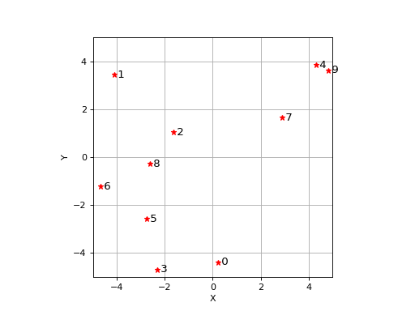
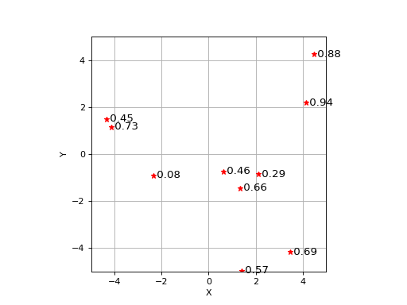

2D graphics
2d graphical primitives which build on Matplotlib.
- plot_arrow(start, end, label=None, label_pos='above:0.5', ax=None, **kwargs)[source]
Plot 2D arrow
- Parameters:
start (
Union[List[float],Tuple[float,float],ndarray[Tuple[ResizeEventType[2]],dtype[floating]]]) – start point, arrow tailend (
Union[List[float],Tuple[float,float],ndarray[Tuple[ResizeEventType[2]],dtype[floating]]]) – end point, arrow headlabel (
Optional[str]) – arrow label text, optionallabel_pos (
str) – position of arrow label “above|below:fraction”, optionalax (
Optional[Axes]) – axes to draw into, defaults to Nonekwargs – argumetns to pass to
matplotlib.patches.Arrow
- Return type:
List[Artist]
Draws an arrow from
starttoend.A
label, if given, is drawn above or below the arrow. The position of the label is controlled bylabel_poswhich is of the form"position:fraction"wherepositionis either"above"or"below"the arrow, andfractionis a float between 0 (tail) and 1 (head) indicating the distance along the arrow where the label will be placed. The text is suitably justified to not overlap the arrow.Example:
>>> from spatialmath.base import plotvol2, plot_arrow >>> plotvol2(5) >>> plot_arrow((-2, 2), (2, 4), color='r', width=0.1) # red arrow >>> plot_arrow((4, 1), (2, 4), color='b', width=0.1) # blue arrow
(
Source code,png,hires.png,pdf)
Example:
>>> from spatialmath.base import plotvol2, plot_arrow >>> plotvol2(5) >>> plot_arrow((-2, -2), (2, 4), label=r"$\mathit{p}_3$", color='r', width=0.1)
(
Source code,png,hires.png,pdf)
- Seealso:
{kind=link}
{kind=link}
{kind=link}
{kind=link}
- plot_box(fmt=None, *, lbrt=None, lrbt=None, lbwh=None, bbox=None, ltrb=None, lb=None, lt=None, rb=None, rt=None, wh=None, centre=None, center=None, w=None, h=None, ax=None, filled=False, **kwargs)[source]
Plot a 2D box using matplotlib
- Parameters:
lb (
Union[List[float],Tuple[float,float],ndarray[Tuple[ResizeEventType[2]],dtype[floating]],None]) – left-bottom corner, defaults to Nonelt (
Union[List[float],Tuple[float,float],ndarray[Tuple[ResizeEventType[2]],dtype[floating]],None]) – left-top corner, defaults to Nonerb (
Union[List[float],Tuple[float,float],ndarray[Tuple[ResizeEventType[2]],dtype[floating]],None]) – right-bottom corner, defaults to Nonert (
Union[List[float],Tuple[float,float],ndarray[Tuple[ResizeEventType[2]],dtype[floating]],None]) – right-top corner, defaults to Nonewh (
Union[List[float],Tuple[float,float],ndarray[Tuple[ResizeEventType[2]],dtype[floating]],None]) – width and height, if both are the same provide scalar, defaults to Nonecentre (
Union[List[float],Tuple[float,float],ndarray[Tuple[ResizeEventType[2]],dtype[floating]],None]) – centre of box, defaults to None (alias:center)w (
Optional[float]) – width of box, defaults to Noneh (
Optional[float]) – height of box, defaults to None
;param lbrt: left-bottom, right-top corners, defaults to None :type lbrt: array_like(4), optional :param lrbt: left-right, bottom-top corners, defaults to None :type lrbt:
Union[List[float],Tuple[float,float,float,float],ndarray[Tuple[ResizeEventType[4]],dtype[floating]],None] :param lbwh: left-bottom corner, width and height, defaults to None :type lbwh:Union[List[float],Tuple[float,float,float,float],ndarray[Tuple[ResizeEventType[4]],dtype[floating]],None] :param ltrb: left-top, right-bottom corners, defaults to None :type ltrb:Union[List[float],Tuple[float,float,float,float],ndarray[Tuple[ResizeEventType[4]],dtype[floating]],None] :param ax: the axes to draw on, defaults togca():type ax:Optional[Axes] :param bbox: bounding box matrix, defaults to None :type bbox:Union[List[float],Tuple[float,float,float,float],ndarray[Tuple[ResizeEventType[4]],dtype[floating]],None] :param filled: fill the box, defaults to False (alias for Matplotlibfill) :type filled:bool:param thickness: line thickness (alias for Matplotliblinewidth) :type thickness: float, optional :type kwargs: :param kwargs: additional arguments passed topyplot.Rectangle()- Returns:
the matplotlib object
- Return type:
List[Artist]
Appearance is controlled by Matplotlib properties passed as keyword arguments, for example:
- Parameters:
color (array_like(3) or str) – box outline and fill color
edgecolor (array_like(3) or str) – box outline colour (alias:
ec)fillcolor (array_like(3) or str) – box fill colour
filled (bool) – fill the box, defaults to False
alpha (float, optional) – transparency, defaults to 1
linestyle (str, optional) – box outline line style (alias:
ls)linewidth (float, optional) – box outline line thickness (alias:
lw)
Additionally, the line style and color can be conveniently set using the pyplot convention where the first argument is a
fmtstring, for example"r--"for dashed red. The allowable color letters are"rgbcmyk"and the line style characters are"-", "--", "-.", ":".The box can be specified in many ways. Two corners:
lb = left-bottom corner
lt = left-top corner
rb = right-bottom corner
rt = right-top corner
Alternatively, one corner or centre plus the dimensons:
wh = [width, height]
w = width
h = height
Alternatively, the box can be specified by a number of 4-vectors, various conventions are in use across different packages, so we support them all:
lbrt = [umin, vmin, umax, vmax]
lrbt = [umin, umax, vmin, vmax]
lbwh = [umin, vmin, w, h]
bbox same as lbwh
ltrb = [umin, vmin, umax, vmax]`
For plots where the y-axis is inverted (eg. for images) then top is the smaller vertical coordinate (highest in the window).
Example:
>>> plotvol2(5) >>> plot_box("b--", centre=(2, 3), wh=1) # w=h=1 >>> plot_box(lt=(0, 0), rb=(3, -2), filled=True, color="r")
(
Source code,png,hires.png,pdf)
{kind=link}
{kind=link}
- plot_circle(radius, centre, *fmt, resolution=50, ax=None, filled=False, **kwargs)[source]
Plot a circle using matplotlib
- Parameters:
- Returns:
the matplotlib object
- Return type:
List[Artist]
Plot or more circles. If
centreis a 3xN array, then each column is taken as the centre of a circle. All circles have the same radius, color etc.Example:
>>> from spatialmath.base import plotvol2, plot_circle >>> plotvol2(5) >>> plot_circle(1, (0,0), 'r') # red circle >>> plot_circle(2, (1, 2), 'b--') # blue dashed circle >>> plot_circle(0.5, (3,4), filled=True, facecolor='y') # yellow filled circle
(
Source code,png,hires.png,pdf)
{kind=link}
{kind=link}
- plot_ellipse(E, centre, *fmt, scale=1, confidence=None, resolution=40, inverted=False, ax=None, filled=False, **kwargs)[source]
Plot an ellipse using matplotlib
- Parameters:
E (
ndarray[Tuple[ResizeEventType[2],ResizeEventType[2]],dtype[floating]]) – matrix describing ellipsecentre (
Union[List[float],Tuple[float,float],ndarray[Tuple[ResizeEventType[2]],dtype[floating]]]) – centre of ellipse, defaults to (0, 0)scale (
Optional[float]) – scale factor for the ellipse radiiresolution (
Optional[int]) – number of points on circumferece, defaults to 40
- Returns:
the matplotlib object
- Return type:
List[Artist]
The ellipse is defined by \(x^T \mat{E} x = s^2\) where \(x \in \mathbb{R}^2\) and \(s\) is the scale factor.
Note
For some common cases we require \(\mat{E}^{-1}\), for example:
for robot manipulability \(\nu (\mat{J} \mat{J}^T)^{-1} \nu\) i
a covariance matrix \((x - \mu)^T \mat{P}^{-1} (x - \mu)\) so to avoid inverting
Etwice to compute the ellipse, we flag that the inverse is provided usinginverted.
Returns a set of
resolutionthat lie on the circumference of a circle of givencenterandradius.Example:
>>> from spatialmath.base import plotvol2, plot_ellipse >>> plotvol2(5) >>> plot_ellipse(np.array([[1, 1], [1, 2]]), [0,0], 'r') # red ellipse >>> plot_ellipse(np.array([[1, 1], [1, 2]]), [1, 2], 'b--') # blue dashed ellipse >>> plot_ellipse(np.array([[1, 1], [1, 2]]), [-2, -1], filled=True, facecolor='y') # yellow filled ellipse
(
Source code,png,hires.png,pdf)
{kind=link}
{kind=link}
- plot_homline(lines, *args, ax=None, xlim=None, ylim=None, **kwargs)[source]
Plot homogeneous lines using matplotlib
- Parameters:
- Returns:
matplotlib object
- Return type:
List[Artist]
Draws the 2D line given in homogeneous form \(\ell[0] x + \ell[1] y + \ell[2] = 0\) in the current 2D axes.
If
linesis a 3xN array thenNlines are drawn, one per column.Example:
>>> from spatialmath.base import plotvol2, plot_homline >>> plotvol2(5) >>> plot_homline((1, -2, 3)) >>> plot_homline((1, -2, 3), 'k--') # dashed black line
(
Source code,png,hires.png,pdf)
- Seealso:
{kind=link}
{kind=link}
- plot_point(pos, marker='bs', text=None, ax=None, textargs=None, textcolor=None, **kwargs)[source]
Plot a point using matplotlib
- Parameters:
- Returns:
the matplotlib object
- Return type:
List[Artist]
Plot one or more points, with optional text label.
The color of the marker can be different to the color of the text, the marker color is specified by a single letter in the marker string.
A point can have multiple markers, given as a list, which will be overlaid, for instance
["rx", "ro"]will give a ⨂ symbol.The optional text label is placed to the right of the marker, and vertically aligned.
Multiple points can be marked if
posis a 2xn array or a list of coordinate pairs. In this case:all points have the same
textlabeltextcan include the format string {} which is susbstituted for the point index, starting at zerotextcan be a tuple containing a format string followed by vectors of shape(n). For example:("#{0} a={1:.1f}, b={2:.1f}", a, b)
will label each point with its index (argument 0) and consecutive elements of
aandbwhich are arguments 1 and 2 respectively.
Example:
>>> from spatialmath.base import plotvol2, plot_point >>> plotvol2(5) >>> plot_point((0,0)) # plot default marker at coordinate (1,2) >>> plot_point((1,1), 'r*') # plot red star at coordinate (1,2) >>> plot_point((2,2), 'r*', 'foo') # plot red star at coordinate (1,2) and label it as 'foo'
(
Source code,png,hires.png,pdf)
Plot red star at points defined by columns of
pand label them sequentially from 0:>>> p = np.random.uniform(size=(2,10), low=-5, high=5) >>> plotvol2(5) >>> plot_point(p, 'r*', '{0}')
(
Source code,png,hires.png,pdf)
Plot red star at points defined by columns of
pand label them all with successive elements ofz>>> p = np.random.uniform(size=(2,10), low=-5, high=5) >>> value = np.random.uniform(size=(1,10)) >>> plotvol2(5) >>> plot_point(p, 'r*', ('{1:.2f}', value))
(
Source code,png,hires.png,pdf)
- Seealso:
{kind=link}
{kind=link}
{kind=link}
{kind=link}
{kind=link}
{kind=link}
- plot_polygon(vertices, *fmt, close=False, **kwargs)[source]
Plot polygon
- Parameters:
vertices (
NDArray) – verticesclose (
Optional[bool]) – close the polygon, defaults to Falsekwargs – arguments passed to Patch
- Returns:
Matplotlib artist
- Return type:
List[Artist]
Example:
>>> from spatialmath.base import plotvol2, plot_polygon >>> plotvol2(5) >>> vertices = np.array([[-1, 2, -1], [1, 0, -1]]) >>> plot_polygon(vertices, filled=True, facecolor='g') # green filled triangle
(
Source code,png,hires.png,pdf)
{kind=link}
{kind=link}
- plot_text(pos, text, ax=None, color=None, **kwargs)[source]
Plot text using matplotlib
- Parameters:
pos (
Union[List[float],Tuple[float,float],ndarray[Tuple[ResizeEventType[2]],dtype[floating]]]) – position of texttext (
str) – textax (
Optional[Axes]) – axes to draw in, defaults togca()color (
Union[str,List[float],Tuple[float,float,float],ndarray[Tuple[ResizeEventType[3]],dtype[floating]],None]) – text color, defaults to Nonekwargs – additional arguments passed to
pyplot.text()
- Returns:
the matplotlib object
- Return type:
List[Artist]
Example:
>>> from spatialmath.base import plotvol2, plot_text >>> plotvol2(5) >>> plot_text((1,3), 'foo') >>> plot_text((2,2), 'bar', color='b') >>> plot_text((2,2), 'baz', fontsize=14, horizontalalignment='centre')
(
Source code,png,hires.png,pdf)
- Seealso:
{kind=link}
{kind=link}
- plotvol2(dim=None, ax=None, equal=True, grid=False, labels=True, new=False)[source]
Create 2D plot area
- Parameters:
ax (
Optional[Axes]) – axes of initializer, defaults to new subplotequal (
Optional[bool]) – set aspect ratio to 1:1, default False
- Returns:
initialized axes
- Return type:
Initialize axes with dimensions given by
dimwhich can be:input
xrange
yrange
A (scalar)
-A:A
-A:A
[A, B]
A:B
A:B
[A, B, C, D]
A:B
C:D
- Seealso:
plotvol3(),expand_dims()